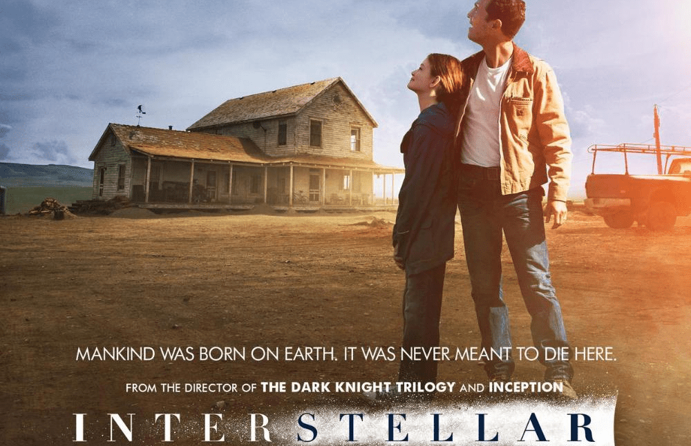

<!DOCTYPE html>
<html lang="en">
<head>
    <meta charset="UTF-8">
    <meta name="viewport" content="width=device-width, initial-scale=1.0">
    <title>Document</title>
</head>
<body>
</body>
</html><!DOCTYPE html>
<html lang="en">
<head>
    <meta charset="UTF-8">
    <meta name="viewport" content="width=device-width, initial-scale=1.0">
    <title>Document</title>
</head>


<!--nav element başlangıç-->
<nav>
 


<h1>Merve Aydin</h1><!--En büyük başlık etiketi-->

<p>Merhaba ben Merve Aydin Karadeniz Teknik Üniversitesi Bilgisayar Mühendisliği 3.sınıf öğrencisiyim. Web Geliştirme ile ilgileniyorum bir start-up da Front-end Developer olarak çalışıyorum Vanswap girişiminin kurucu ortağıyım.İstanbul'da yaşıyorum. Tenis oynamaktan keyif alıyorum.</p>
<strong><h3>Sevdiğim Film</h3></strong>
<p> Interstaller ,Memento ,Kader Zeki Demirkubuz , Ölümlü Dünya </p>

</nav>
<!--nav element bitiş-->
 
<!--section element başlangıç-->
<section>
    <p>Yıldızlararası'nda, teknik bilgisi ve becerisi yüksek olan Cooper, geniş mısır tarlalarında çiftçilik yaparak geçinmektedir; amacı iki çocuğuna güvenli bir hayat sunmaktır. Onlarla yaşayan Büyükbaba Donald çocuklara göz kulak olurken, henüz 10 yaşındaki kızı Murph şaşırtıcı bir zekaya sahiptir. Geçmişte bıraktığı biliminsanı kariyerini özleyen Cooper'un karşısına bir gün beklenmedik bir teklif çıkar ve ailesinin, dahası insanlığın güvenliği için zorlu bir karar alması gerekir...

        Christopher Nolan'ın, Jonathan Nolan ile kaleme aldığı ve yönetmenliğini sırtladığı filmin yıldız oyunculardan oluşan oyuncu kadrosunda Matthew McConaughey, Anne Hathaway, Jessica Chastain, Matt Damon, Bill Irwin, John Lithgow ve Michael Caine gibi isimler yer alıyor. Bilimkurgunun yanı sıra dramatik öğeler de içeren filmin senaryosu Fizikçi Kip S. Thorne'nun evrendeki 'Solucan Delikleri' teorisinden ilham alıyor.</p>
</section>
<!--section element bitiş-->
 
<!--footer element başlangıç-->

<!--footer element bitiş-->


<p> İzlediğim <strong>Filmler </strong></p>
    <ol>
        <li>Interstaller</li>
        <li>Memento</li>
        <li>Kader Zeki Demirkubuz</li>
    </ol>
     
    <p> Okuduğum<strong>Kitaplar </strong></p>
    <ul>
        <li>Serenad</li>
        <li>Hiç bir karşılaşma tesadüf değildir</li>
        <li><a href="https://www.goodreads.com/quotes/tag/masumiyet-m%C3%BCzesi">Masumiyet müzesi</a></li>

        
      </ul>

    <p> İzlediğim <strong>Diziler</strong></p>
        <ul style="list-style-type:none">
        <li><a href="https://www.imdb.com/title/tt0816692/">Interstaller</a></li>
        <li>Memento</li>
        <li>Kader Zeki Demirkubuz</li>
    </ul>

      
    <footer>
        Copyright © 2021
    </footer>

</body>
</html>
      <body>
    </body>
    </html>